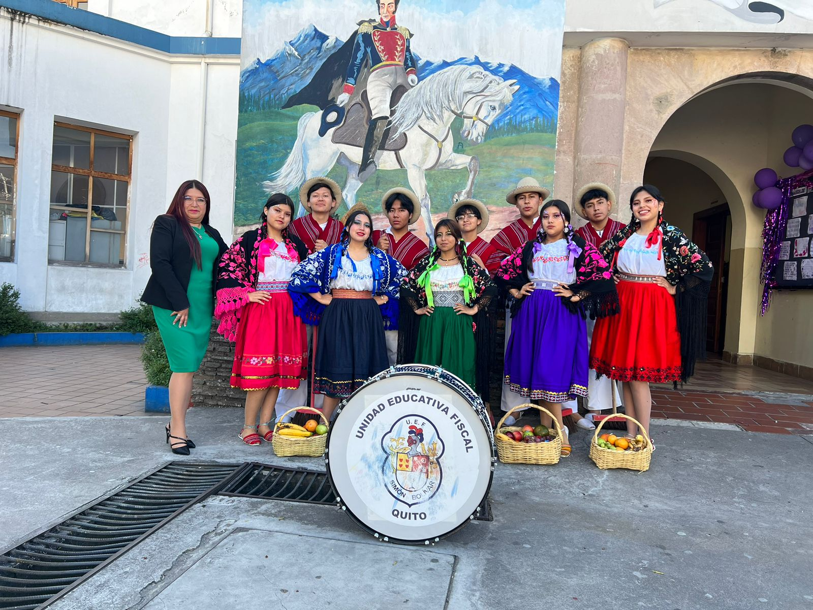
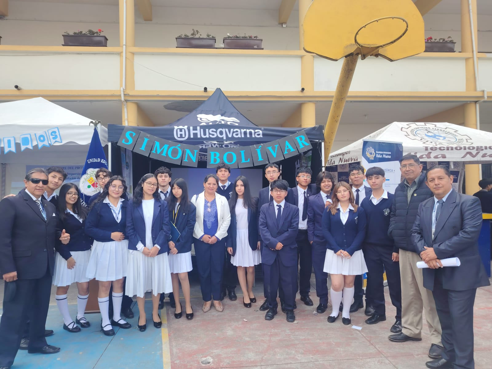
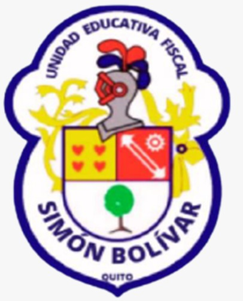

Historia del colegio Simón Bolívar
Fue fundado el 19 de agosto de 1940, bajo el nombre de Liceo Simón Bolívar mediante el Acuerdo Ministerial N° 571, por parte de la educadora María Angélica Idrobo; con el objetivo de formar en educación secundaria a la juventud femenina, en varias especialidades y se estableció como un plantel particular.
Fue nombrado en honor a Simón Bolívar, militar y prócer de la independencia americana. Inicialmente se ubicó en el hogar de su fundadora y posteriormente se reubicó a la instalación ubicada en las calles Benalcázar y Olmedo, Centro histórico de Quito.
En 1948 el Liceo Simón Bolívar pasa a pertenecer al Ministerio de Educación, de esta forma se convierte en una institución pública. Entre las especialidades disponibles se encontraban: corte y confección, bordado y contabilidad.
El 21 de septiembre de 1957 se reorganiza, cambiando su nombre a ''Colegio Técnico de Señoritas Simón Bolívar''. En esta época, el rectorado de la institución fue asumido por Helena Cortés de Gutiérrez, quien se mantuvo en el cargo por 31 años.
En 1960, se afianza como uno de los planteles pioneros en la doble jornada de trabajo al crear la sección vespertina.
El 7 de agosto de 1984, mediante Acuerdo Ministerial N° 5719, pasa a convertirse en plantel experimental.
En el año 2011, el colegio pasa a ser mixto, conforme a la reforma del Ministerio de Educación; por lo tanto, se integraron estudiantes de género masculino.
Históricamente, el Simón Bolívar se ubicó en el edificio patrimonial ubicado en las calles Benalcázar y Olmedo, en el Centro Histórico de Quito.
Esta infraestructura tiene más de 300 años, anteriormente fueron las instalaciones del Instituto Nacional Mejía; cuenta con cinco edificios patrimoniales tipo patio y un edificio tipo basílica, además de estos también cuenta con otros edificios incorporados por el plantel.
Allí funcionó este establecimiento educativo por un período de 72 años.
En el año 2010, se encontraron daños en la infraestructura del edificio por su antigüedad, lo que posteriormente generó que la institución cambiara de edificio.
En el año 2012, después de concretarse el convenio entre el Municipio de Quito, Ministerio de Educación y el Instituto Metropolitano de Patrimonio, el Colegio Simón Bolívar se mudó a sus nuevas instalaciones, ubicadas en las calles Río de Janeiro y Manuel Larrea.
En dicho edificio funcionó anteriormente el Colegio Municipal Eugenio Espejo, las cuales fueron intervenidas en su infraestructura para poder recibir a los estudiantes del Simón Bolívar. Esto se dio a partir del año lectivo 2012-2013.
Sus instalaciones actuales se componen de lo siguiente:
Mide en total 9300 m², de los cuales el bloque antiguo tiene 5 800 m² y el bloque más reciente (construido durante la intervención), 3 500 m².
En la parte exterior, en la calle Río de Janeiro cuenta con parqueaderos.
Formar estudiantes con una educación integral basada en valores, conocimientos científicos y tecnológicos que les permitan desenvolverse con responsabilidad dentro de la sociedad.
Ser una institución educativa reconocida por su calidad académica, formación en valores y compromiso con el desarrollo integral de los estudiantes.
Todo el orbe se pone de pie para honrar de Bolívar el nombre que en la tierra no hay quien no se asombre de su espada mirando el fulgor.
Ante el bronce su efigie sagrada entonemos un himno de gloria, que en el mundo repita la Historia de su invicto y heroico campeón.
Si en Caracas su cuerpo reposa en un templo mamóreo y grandioso otro templo muy alto y hermoso, le consagra también mi nación.
De laureles con áureas coronas demos culto a su altar sin ejemplo, como el mármol que cubre su templo siempre eterno será nuestro amor.
Letra: Presbítero Enrique Nájera
Música: Reinaldo Suárez
La especialidad de informática prepara a los estudiantes en el uso de tecnologías, programación y desarrollo de software.
La especialidad de contabilidad forma estudiantes capaces de manejar registros financieros y administración de recursos económicos.
Brinda formación académica general en matemáticas, lengua, ciencias naturales, estudios sociales e inglés.
El Colegio Fiscal Simón Bolívar cuenta con diferentes grupos deportivos, artísticos y culturales en los que los estudiantes pueden participar según sus intereses y talentos. Estos grupos permiten desarrollar habilidades físicas, artísticas y sociales, además de fomentar la disciplina, el compañerismo y el orgullo de representar al colegio en eventos y competencias.
La selección de fútbol del colegio está conformada por estudiantes que tienen habilidades en este deporte y que representan a la institución en campeonatos intercolegiales y actividades deportivas. Durante los entrenamientos los estudiantes aprenden técnicas de juego, estrategia, disciplina y trabajo en equipo.
La motivación de los estudiantes para formar parte de este grupo es desarrollar sus capacidades deportivas, mejorar su condición física y tener la oportunidad de representar con orgullo al colegio en diferentes competencias.
El equipo de básquet masculino participa en torneos deportivos y eventos institucionales. Este grupo permite a los estudiantes desarrollar habilidades como la coordinación, velocidad, estrategia y trabajo en equipo.
Los estudiantes se sienten motivados a participar porque el básquet les permite fortalecer su disciplina deportiva, compartir con sus compañeros y vivir la experiencia de competir representando al colegio.
El ecuavóley es un deporte tradicional muy popular en el Ecuador. En el colegio este grupo promueve la práctica de este deporte, organizando entrenamientos y participando en torneos deportivos.
Los estudiantes se motivan a participar porque disfrutan del deporte, fortalecen el trabajo en equipo y mantienen viva una tradición deportiva ecuatoriana.
El grupo de bastoneras está conformado por estudiantes que participan en desfiles, actos cívicos y eventos institucionales del colegio. Este grupo requiere disciplina, coordinación, elegancia y práctica constante para realizar coreografías y presentaciones.
La motivación de las estudiantes para integrarse a este grupo es representar al colegio en eventos importantes, demostrar sus habilidades artísticas y fortalecer la confianza y el trabajo en equipo.
La banda del colegio está formada por estudiantes que interpretan instrumentos musicales y acompañan actos cívicos, desfiles y ceremonias institucionales. La banda representa una tradición importante dentro de la institución.
Los estudiantes participan en este grupo porque desean desarrollar sus talentos musicales, aprender disciplina y contribuir con el ambiente cultural y artístico del colegio.
El grupo de danza promueve la expresión artística a través del baile. Los estudiantes realizan presentaciones en eventos culturales, festividades escolares y actividades institucionales.
La motivación para participar en danza es poder expresar creatividad, aprender sobre cultura y arte, y compartir momentos de alegría y compañerismo con otros estudiantes.
¡POR EL COLEGIO!
Simón Bolívar, gritamos tu nombre que perdure en el tiempo y en el corazón de quienes te queremos, azul y blanco los colores que defienden con honor el futuro de la patria.
¡Somos del Colegio Simón Bolívar, sí señor!
¡C - O! Co
¡L - E! Le
¡GIO! GIO
¡Colegio Simón Bolívar, sí señor!
Que dice la C Colegio
Que dice la S Simón
Que dice la B Bolívar
Csb Colegio Simón Bolívar ras
Dirección: Calle Río de Janeiro y Manuel Larrea, Quito, Ecuador
Teléfono: +593 2 123 4567
Email: info@colegiosimonbolivar.edu.ec